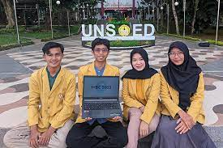

Universitas Jenderal Soedirman (UNSOED)
Universitas Jenderal Soedirman (UNSOED) adalah sebuah perguruan tinggi negeri di Indonesia yang terletak di Purwokerto, Kabupaten Banyumas, Jawa Tengah. Universitas ini berdiri pada tanggal 23 September 1963. Nama Jenderal Soedirman diambil dari Panglima Besar Jenderal Soedirman yang merupakan pahlawan nasional kelahiran Eks-Keresidenan Banyumas, untuk mengenang jasa-jasanya pada nusa, bangsa, dan negara.
Unsoed adalah universitas tertua kedua di Jawa Tengah setelah Universitas Diponegoro dan menjadi salah satu universitas bergengsi di Indonesia dengan angka peminat yang relatif tinggi dalam seleksi nasional setiap tahunnya.
Kampus yang memiliki luas lebih dari 850 ribu meter persegi ini memiliki udara yang relatif sejuk, karena secara geografis letaknya berada di ketinggian 210–245 mdpl dan berada di kaki Gunung Slamet, sebelah utara Purwokerto. Selain sejuk, kampus ini letaknya tidak berada persis di tengah keramaian kota sehingga bisa dikategorikan kondusif dan nyaman untuk kegiatan belajar mengajar dengan biaya hidup yang terjangkau
Universitas Jenderal Soedirman juga tercatat menjadi salah satu dari 10 besar PTN terfavorit di Indonesia. Hal tersebut ditunjukan dari tingkat kompetisi seleksi masuk Unsoed berada di peringkat sembilan nasional pada tahun 2013. Pada tahun 2016, Unsoed meraih peringkat sebagai universitas terbaik nomor 16 oleh Pemeringkatan Dikti. Pada tahun 2020, Unsoed meraih peringkat 14 sebagai universitas negeri terfavorit dalam SBMPTN yang diselenggarakan LTMPT.] Pada tahun 2021, Unsoed memperoleh peringkat ke-17 sebagai universitas terbaik versi SCImago Institutions Ranking (SIR) 2021 dan berada di jajaran 20 besar perguruan tinggi terbaik se-Indonesia. Pada tahun 2023, Unsoed mengalami kenaikan pesat peringkat dalam dan luar negeri menurut lembaga pemeringkatan internasional, yakni peringkat 17 se-Indonesia oleh Webometrics dan 14 se-Indonesia oleh UniRank 4ICU. Pusat keunggulan pemberdayaan perdesaan dan kearifan lokal sebagai identitas utama Unsoed dan peningkatan rekognisi internasional merupakan misi Universitas Jenderal Soedirman sebagai "World Class Civic University".
Universitas Jenderal Soedirman saat ini memiliki dua belas fakultas yang menyelenggarakan program pendidikan dalam jenjang vokasi, sarjana, magister, dan doktor.
Sejarah
Pra-pendirian Universitas Djenderal Sudirman (1960-an)
Keresidenan Banyumas merupakan salah satu wilayah di Indonesia yang menjadi tempat dinamika sosial, politik, dan kebudayaan yang signifikan sejak masa kolonial hingga awal kemerdekaan, utamanya di kawasan Jawa Tengah. Fakta ini berangkat dari beragam tokoh Banyumas yang memiliki pengaruh besar dalam peta perkembangan bangsa Indonesia, seperti Raden Mas Goembrek dan Raden Angka Prodjosoedirdjo yang merupakan salah satu tokoh pendiri gerakan Budi Utomo dan alumni Sekolah Pendidikan Dokter Bumiputra atau STOVIA, Raden Mas Margono Djojohadikoesoemo sebagai pendiri Bank Negara Indonesia, Margono Soekarjo sebagai dokter ahli bedah pertama di Indonesia, dan Raden Bei Aria Wirjaatmadja sebagai pendiri Bank Rakyat Indonesia. Kontribusi tokoh nasional ini tidak sejalan dengan kondisi masyarakat Keresidenan Banyumas yang tidak mempunyai pusat pendidikan tinggi berkualitas dan bergengsi di Indonesia, di mana masyarakat Banyumas masih mengandalkan perguruan tinggi di kota lain seperti Universitas Gadjah Mada di Yogyakarta, Universitas Diponegoro di Semarang, dan Universitas Indonesia di Jakarta. Adanya isu ini kemudian melahirkan kehendak masyarakat Banyumas untuk mendirikan sebuah perguruan tinggi negeri agar calon mahasiswa bisa mengenyam pendidikan sarjana di wilayah Banyumas.
Menimbang amanat yang tersurat dalam Pembukaan UUD 1945 dalam upaya mencerdaskan kehidupan bangsa dan desakan masyarakat Banyumas akan kebutuhan pendidikan tinggi tersebut, para pemimpin Banyumas menggagas ide pendirian perguruan tinggi di wilayah Banyumas. Melalui inisiatif oleh pemangku kepentingan di Banyumas, yakni Raden Soemardjito sebagai Residen Banyumas, Raden Kriharto, Raden Soetardjo S., M. Soemarmo, Raden Soeroso, S.H., dan Letnan Kolonel Soegiharto, yang merupakan sebagian dari 35 orang tokoh inisiator dari latar belakang militer dan masyarakat umum, digagas sebuah lembaga bernama Jajasan Pembina Universitas Djenderal Sudirman. Sebagai tindak lanjut atas gagasan ini, Jajasan Pembina Universitas Djenderal Sudirman resmi berdiri dengan Akta Notaris No. 32 tanggal 20 November 1961 di Yogyakarta yang ditandatangani oleh Notaris Raden Mas Wiranto.
Jajasan Pembina Universitas Djenderal Sudirman sebagai lembaga penanggung jawab pendirian perguruan tinggi di Banyumas ini kemudian berusaha mewujudkan berdirinya sebuah universitas. Dengan Surat Keputusan Presiden Republik Indonesia No. 195 tertanggal 23 September 1963, secara resmi didirikan Universitas Jenderal Soedirman (nomenklatur sebelumnya menurut Keppres dieja dengan nama Universitas Djenderal Sudirman) yang ditandatangani oleh Presiden Soekarno dan diresmikan oleh Menteri Perguruan Tinggi dan Ilmu Pengetahuan (kini Kementerian Pendidikan, Kebudayaan, Riset, dan Teknologi) Prof. Dr. Tojib Hadiwidjaja yang bertempat di Rumah Dinas Residen Banyumas.
Ekspansi universitas (1966–1999)
Pengembangan Unsoed baru dimulai beberapa tahun setelah pendiriannya sejak 1963 silam. Pada tahun 1966, didirikan Fakultas Peternakan yang merupakan hibah dari Universitas Islam Indonesia Yogyakarta yang sebelumnya adalah hasil pengembangan dari program Fakultas Kedokteran Hewan dan Peternakan UII Cabang Purwokerto.
Kepemimpinan rektor kedua Unsoed, Soedaman Hadisoetjipto, menghasilkan pendirian Fakultas Hukum Universitas Jenderal Soedirman yang merupakan inisiatif pengembangan disiplin ilmu pengetahuan kemasyarakatan pertama di Unsoed setelah membandingkan keberadaan fakultas hukum di universitas lain yang sudah lebih dahulu berdiri, seperti Fakultas Hukum Universitas Gadjah Mada, Fakultas Hukum Universitas Padjadjaran, dan Fakultas Hukum Universitas Diponegoro. Tidak hanya itu, dalam periode ini juga Unsoed mendirikan program studi kejuruan, yakni Program Diploma Ahli Kesekretariatan, Ahli Administrasi, dan Ternak Unggas dan Perah. Di luar akademik, dalam periode ini Unsoed mulai merintis rencana induk pengembangan yang dimaksudkan untuk memapankan jati diri dan infrastruktur induk universitas, yakni lambang/segel universitas, identitas, lagu wajib/himne, dan gedung perkuliahan dan kantor kampus. Sampai pengujung jabatan rektor kedua ini pula menjadi akhir kepemimpinan rektor Unsoed dari tokoh berlatar belakang militer.
Raden Djanuar, guru besar Fakultas Peternakan, yang menjabat sejak 1982–1986 sebagai rektor ketiga Unsoed merupakan titik awal kepemimpinan Universitas Jenderal Soedirman oleh tokoh cendekiawan dan masyarakat sipil. Sejak periode kepemimpinan ini, pengembangan Unsoed menjadi lebih masif dengan pembangunan kampus baru di Karangwangkal, Purwokerto Utara, hanya berjarak beberapa blok ke arah tenggara dari kampus utama di Grendeng yang ada di sebelah barat laut. Di tahun-tahun kepemimpinannya pula dilanjutkan rencana pendirian program studi kejuruan pada tahun 1983, yakni Program Diploma Pendidikan Ahli Keuangan, Pendidikan Ahli Administrasi Perkantoran, dan Pendidikan Ahli Ternak Unggas dan Perah. Visi pendirian Fakultas Ilmu Sosial dan Ilmu Politik Universitas Jenderal Soedirman di akhir masa jabatan Raden Djanuar baru terwujud dengan didirikannya Program Sarjana Sosiologi dan Administrasi Negara sejak tahun 1984 yang masih harus menginduk pada Fakultas Hukum Unsoed.
Pengembangan akademik dan internasionalisasi (2000–2013)
Kepemimpinan rektor keenam dipegang oleh Rubijanto Misman yang merupakan lulusan Unsoed dari Fakultas Biologi dan menjadi salah satu guru besar pertama di Unsoed. Pengembangan program sarjana di bidang teknik mulai dirintis oleh Rubijanto Misman dalam masa jabatan keduanya yang diawali dengan nota kesepahaman antara Rektor Unsoed dengan Triyono Budi Sasongko, Bupati Purbalingga, dalam pendirian Program Sarjana Teknik di Blater, Purbalingga, dengan skema hibah lahan (land grant) seluas 13 hektare dalam tujuan pengembangan Purbalingga sebagai kawasan industri dan salah satu kota penyangga Purwokerto di wilayah Eks-Keresidenan Banyumas.[26] Selain itu, di tahun 2001, Unsoed mulai merintis pendirian Program Sarjana Pendidikan Dokter dengan rencana pembangunan Fakultas Kedokteran di Kompleks Rumah Sakit Umum Daerah Margono Soekarjo. Pengembangan terakhir dalam kepemimpinan Rubijanto Misman adalah pendirian program pascasarjana secara masif di berbagai fakultas.
Rektor ketujuh, Soedjarwo, dalam masa jabatannya berfokus pada perluasan program studi dalam jenjang diploma, sarjana, hingga pascasarjana.Rektor kedelapan, Edy Yuwono, yang juga merupakan guru besar Fakultas Biologi, mulai mencanangkan misi penjenamaan Unsoed dalam mewujudkan universitas berstandar internasional atau world class civic university yang dilakukan dengan pengembangan kemitraan oleh Unsoed dengan perguruan tinggi dan institusi di luar negeri. Misi ini kemudian dilanjutkan oleh kepemimpinan rektor kesembilan, Mas Yedi Sumaryadi yang menjabat sejak 2013–2014. Di masa ini pula Unsoed mulai membangun rumah sakit gigi dan mulut pertama di Provinsi Jawa Tengah sebagai upaya pengembangan studi kedokteran.[27]
Restrukturisasi dan transisi menuju badan hukum (2014–sekarang)
Kepemimpinan rektor kesepuluh Unsoed, Achmad Iqbal, yang sebelumnya merupakan Dekan Fakultas Pertanian Unsoed, menghasilkan kebijakan restrukturisasi universitas dengan menimbang 57 program studi, yang pada masanya tergabung hanya dalam enam fakultas, agar dipecah menjadi dua belas fakultas dengan disiplin ilmu dalam satu rumpun yang sama untuk memudahkan pengembangan akademik dan institusional, yang kemudian disahkan oleh Keputusan Menteri Pendidikan Nasional dan Surat Keputusan Rektor Unsoed Tahun 2014 Nomor 1600/UN23/OT.01/2014 tertanggal 24 Oktober 2014 tentang Penetapan Fakultas-Fakultas Baru Universitas Jenderal Soedirman.
Dalam kepemimpinan rektor kesebelas, Suwarto, Unsoed resmi menyandang akreditasi institusi "A" oleh Badan Akreditasi Nasional Perguruan Tinggi (BAN-PT). Di periode ini pula Unsoed mulai mengalami perkembangan infrastruktur seperti pembangunan fasilitas dan gedung perkuliahan, revitalisasi kampus, dan rencana pembangunan aset bendawi (tangible) seperti gedung dan aset tak benda (intangible) seperti paten atau bisnis universitas untuk meningkatkan penerimaan negara bukan pajak (PNBP), seperti rencana pembangunan hotel universitas Unsoed Inn, unit usaha dan ritel seperti Unsoed Campus Cafe dan Soedirman Adventure Coffee, pasar swalayan Koperasi Kampus Unsoed, kantor kas bank, gerai kewirausahaan mahasiswa, Lahan Pertanian Percobaan Pendidikan, dan Rumah Sakit Akademik seluas 5,7 hektare.